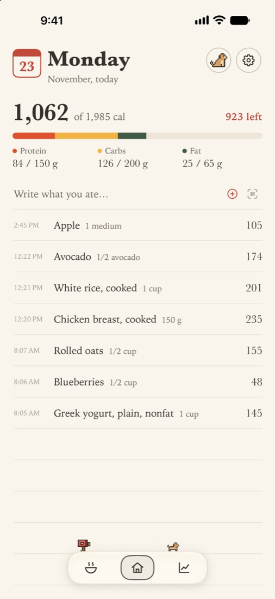
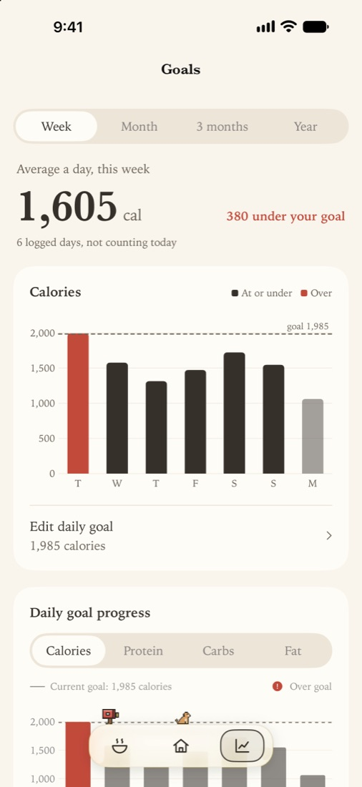
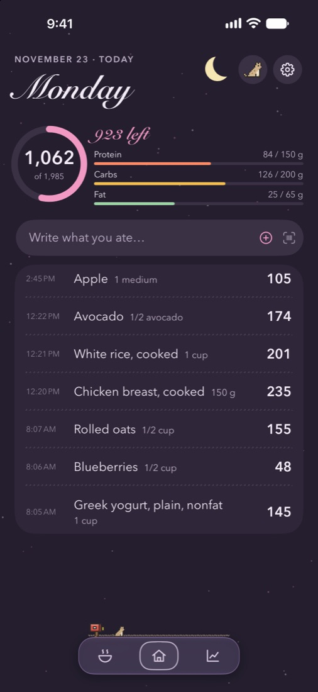

A food notebook for your macros



What it does
- Log by writing a line like "2 eggs", scanning a barcode or using Quick Add.
- See protein, carbs, fat, fiber, calories and water against your daily goal.
- Log from Apple Watch, and sync with Apple Health if you turn it on.
- Adopt a Smacritter, a pixel pet that lives on your page and grows as you log.
- No account, no ads and no tracking. Your log stays on your devices and in your own iCloud.
Smacro is for iPhone, with iOS 18 or later. Logging, food search, barcodes, goals and iCloud backup are free. Smacro Pro and the Smacro Shop add extras.
Smacro is a notebook, not medical or nutrition advice. Talk to a doctor or registered dietitian before setting goals or changing how you eat. Read the disclaimer.